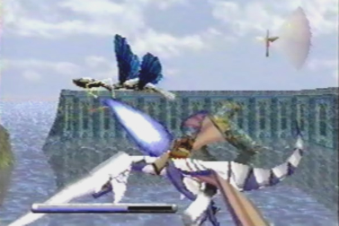
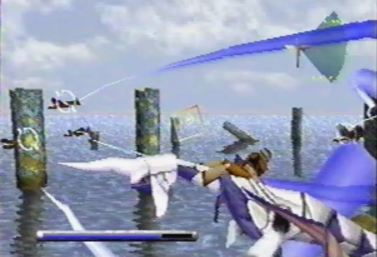

The Battle System Panzer Dragoon Saga takes the gameplay aspects and 360 degree movement of the previous games, to create a battle system that is totally new and enjoyable. The rails, or restrictions that prevented the dragon from stooping in the rail shooters, have been completely removed and the dragon is free to move around the enemies a full 360 degrees. The dragon is able to move 4 different directions: front, left, rear and right. This is very similar to how the dragons in the previous games, moved around. The dragon is able to stop in any of those 4 directions, wherever it pleases. Below the screen, is a circular radar, called the battle radar. It's sort of like the enemy radar, showing your dragons location around the enemy. Within this circle, red spots can be found. These red spots represent danger zones. If the dragon stays in any of these spots for a prolonged period of time, he will take heavy damage from the enemies oncoming attack. To the right of the circular battle radar, are 3 gauges. These gauges must fill up one by one, in order for you to use certain attacks. Once one of these gauges fills up, you can bring up a unique in battle menu, by pressing the C button or start. A series of options can be chosen on the left hand side. When one gauge is filled, the first option, allows you to fire Edge's gun. When the A button is pressed, the view switches over to first person, as Edge aims his gun. The gun can be fired at multiple locations on the enemies body, by moving the cursor left or right, to select a location. Certain enemies also have weak points, which you can shoot at. Doing so, will take fatal damage to that enemy. Also, when one gauge is filled, the second option down, allows you to lock-on and fire a series of lasers from the dragon. These lasers lock-on to multiple spots on the enemies bodies automatically. The next option you have, when one gauge is filled, the third option down, allows you to select and use items. You will need to heal your dragon constantly throughout the many battles you will be engaged in. You can also use items to attack enemies in battle, boost up your defense, attack power and speed, heal status ailments, or flee from the battle. When 2 or more gauges are filled, the fourth option down, allows you to select and use the dragon's special berserk attacks. These attacks are very powerful and can completely obliterate most enemies. These special attacks require something called BP or berserk points, to execute. Once you run out of BP, you can't use any of these attacks until you use an item that replenishes your BP. Another option when one gauge is filled, the fifth option down, allows you to customize your gun. While in this menu, you can switch to a different gun if needed. The last option you have when one gauge is filled, the sixth and final option down, allows you to go into yet another special menu and change your dragon's form, just like in the player menu. The dragon can change into a defense form to defend against attacks, an attack form to make his laser fire more powerful, an agility form to move around and fill up the gauges faster and a spiritual form to add more power to his berserk attacks. That's pretty much it for the battle system. It has some of the gameplay aspects of the previous games, while also feeling completely fresh and new at the same time. |
The original Panzer Dragoon was a rail shooter. In the game, you had the ability to turn a full 360 degrees to 4 different directions: forward, left, rear and right. While turning to these 4 directions, your dragon was always on a constant path moving forward, unable to stop. |
Panzer Dragoon Saga still uses the 360 degree movement from the previous games. You can also, move to the front, left, rear, and right. There are some minor differences, when compared to Panzer Dragoon and Panzer Dragoon 2 Zwei. This time, you move around the enemies and the rails or restrictions, that prevented your dragon from stopping, have been completely removed. Unlike the dragons from the previous games, Panzer Dragoon Saga's dragon can stop and hold his position, at any of the 4 directions he chooses. |
This is the enemy radar from Panzer Dragoon. |
Panzer Dragoon Saga has something similar to the enemy radar. It's a circular radar called the battle radar, that shows your dragon's position around the enemy. The dragon symbol in the middle represents your dragon. The green spots are safe spots, spots where the enemy can't touch you. The red spots are danger zones. If the dragon stays in any of these spots for a prolonged period of time, he will take serious damage from the enemies attacks. |
While in a red spot or danger zone, the enemy fires a debilitating attack towards the dragon. |
The dragon takes heavy damage and is paralyzed, unable to move. Until you use an item that will cure the paralyzation, the dragon is helpless and open to enemy attacks. |
To the right of the circular dragon radar, are 3 gauges. Each gauge needs to fill up one by one, in order for you to perform certain attacks. Once, one gauge is filled, you can press the C, or Start button. This will bring up an in battle menu. |
When one gauge is filled, the first option, allows Edge to fire his gun. |
While the first option is highlighted, when the A button is pressed, the view will shift to first person, as Edge fires his gun at the enemy. When in this view, you can also select different enemies, by moving the cursor left or right with the D-pad or analog stick. Some enemies have weak points. Firing your gun at these weak points will take fatal damage. |
 The way in which Edge fires his gun, is very similar to how the dragon riders from Panzer Dragoon and Panzer Dragoon 2 Zwei, fired their guns. |
Also, when one gauge is filled, the second option down, allows your dragon to fire multiple lock-on lasers at surrounding enemies. |
While the second option is highlighted, if you press the A button, the dragon will lock-on to multiple targets. |
He will then fire a series of powerful lasers towards the enemies, taking most of them out. |
 The way in which the dragon from Panzer Dragoon Saga fires his lock-on lasers, is very similar to how the dragons from the previous games fired their lock-on lasers. |
The next option you have, when one gauge is filled, the third option down, allows you to use items to attack enemies, heal, boost your attack power, defense and speed, cure status ailments, replenish BP, or flee from the battle. |
While the third option is highlighted, pressing the A button, will bring up another manu containing all of the items that you can use in battle. Items called Elixir Minors and Elixir Medis replenish your dragons life points or HP. |
Throughout the many battles you will be engaged in, you will have to constantly heal your dragon. |
When two or more gauges are filled, the fourth option down, allows your dragon to use special moves called berserk attacks. |
When the fourth option is highlighted, pressing the A button, will bring up a menu containing all of the special berserk attacks you can use in battle. |
Once you select a berserk attack, pressing the A button will cause the dragon to charge his laser power to incredible levels. |
Many berserk attacks are devastating and can completely obliterate a group of enemies with one blow. |
In order to use berserk attacks, they require something called BP, or berserk points. Once these BP points have been diminished, your berserk attacks will gray out and you won't be able to use them again, until you use certain items called Berserk Micros or Berserk Minors. These items will replenish your BP. |
Another option you have when one gauge is filled, the fifth option down, allows you to customize your gun using different gun parts. |
When the fifth option is highlighted, pressing the A button, will bring up yet another menu containing different gun parts you've collected throughout your adventure. It's here that you can switch to a different gun. Each gun has different uses for certain situations. |
The last option you have, when one gauge is filled, the sixth and final option down, allows you to go into a dragon morph menu, just like the one in the player menu and change your dragon's form. |
Within this menu, you can change your dragon's form, by moving a cursor around in a circular motion. There are a total of 4 different forms, each form has a specific quality and use. |
First, is the Defense form. This form strengthens the dragon's defense against enemy attacks. |
Second, is the Attack form. This form makes the dragon's laser fire more powerful. |
Third, is the Agility form. This form allows your dragon to move around faster. Your gauges will also fill up more quickly as well. |
Lastly, is the Spiritual form. This form adds more power to the dragon's berserk attacks. |